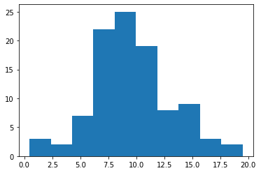

Time dependent analyses with the public 10-year IceCube point-source data
This tutorial shows how to use the public point-source data for a time dependent point-source analysis. The time fit is performed by the expectation maximization (EM) algorithm.
[1]:
from matplotlib import pyplot as plt
import numpy as np
from skyllh.analyses.i3.publicdata_ps.time_dependent_ps import (
create_analysis,
do_trials_with_em,
unblind_single_flare,
TXS_0506_PLUS056_ALERT_TIME,
TXS_0506_PLUS056_SOURCE,
)
from skyllh.core.config import Config
from skyllh.datasets.i3.PublicData_10y_ps import create_dataset_collection
First we need to create a local configuration for the analysis. We will create just the default configuration:
[2]:
cfg = Config()
Now we can get the dataset:
[3]:
dsc = create_dataset_collection(
cfg=cfg,
base_path="/home/mwolf/projects/publicdata_ps/")
datasets = dsc["IC86_II-VII", ]
We create the Anaylsis instance for the TXS 0506+056 source.
[4]:
ana = create_analysis(
cfg=cfg,
datasets=datasets,
source=TXS_0506_PLUS056_SOURCE,
refplflux_gamma=2.0,
gauss={"mu":57000, "sigma": 65})
100%|██████████| 43/43 [00:04<00:00, 9.25it/s]
100%|██████████| 1/1 [00:23<00:00, 23.03s/it]
100%|██████████| 44/44 [00:00<00:00, 2263.58it/s]
[5]:
(best_ts, best_em_result, best_fitparam_values) = unblind_single_flare(
ana=ana,
remove_time=TXS_0506_PLUS056_ALERT_TIME)
100%|██████████| 51/51 [00:06<00:00, 8.04it/s]
[6]:
print(f'best TS = {best_ts:g}')
print(f'best em mu = {best_em_result["mu"]:g}')
print(f'best em sigma = {best_em_result["sigma"]:g}')
print(f'best ns = {best_fitparam_values[0]:g}')
print(f'best gamma = {best_fitparam_values[1]:g}')
best TS = 15.4046
best em mu = 56972.7
best em sigma = 27.9716
best ns = 7.36603
best gamma = 2.20371
Run backgroud trials, i.e. mean_n_sig=0
[7]:
bg_trials = do_trials_with_em(ana=ana, n=100, mean_n_sig=0, ncpu=4)
100%|██████████| 100/100 [03:25<00:00, 2.05s/it]
[8]:
plt.hist(bg_trials["ts"])
[8]:
(array([ 3., 2., 7., 22., 25., 19., 8., 9., 3., 2.]),
array([ 0.45811669, 2.35982925, 4.26154181, 6.16325437, 8.06496693,
9.96667949, 11.86839206, 13.77010462, 15.67181718, 17.57352974,
19.4752423 ]),
<BarContainer object of 10 artists>)

[ ]: